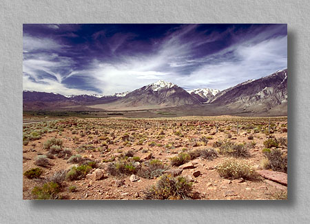
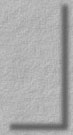

|  |
|
#173252 Mt. Tom Bishop, California Mt. Tom, at 4161 meters (13,652 feet) above mean sea level, is one of the more massive mountains in the Sierra Nevada. Further east and more singular in appearance than most of the peaks of the range, it is a prominent feature as seen from nearby Sherwin Grade on highway 395 east of Bishop. |
|  |
| This site Copyright © 1998 Mike Sisk, All Rights Reserved. No form of reproduction, including copying or saving of digital image files, or the alteration or manipulation of said image files is permitted. Any unauthorized use of these images will be prosecuted to the full extent of federal copyright laws. |